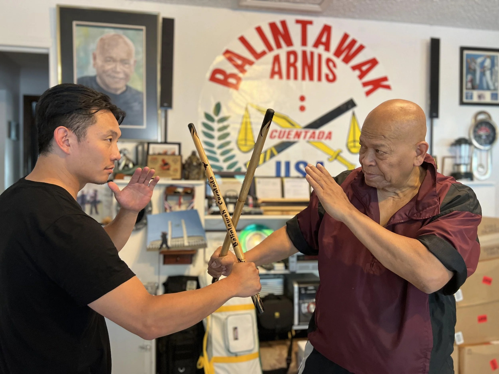

Grandmaster Bobby Taboada
With an illustrious career spanning decades, GM Taboada has become a revered figure, a current legend, and an icon of Filipino martial arts.
Born and raised in Cebu, Philippines, Bobby began his journey in the martial arts at a very young age, training under Grandmaster Teofilo Velez, one of the original members of the Balintawak Arnis Club.